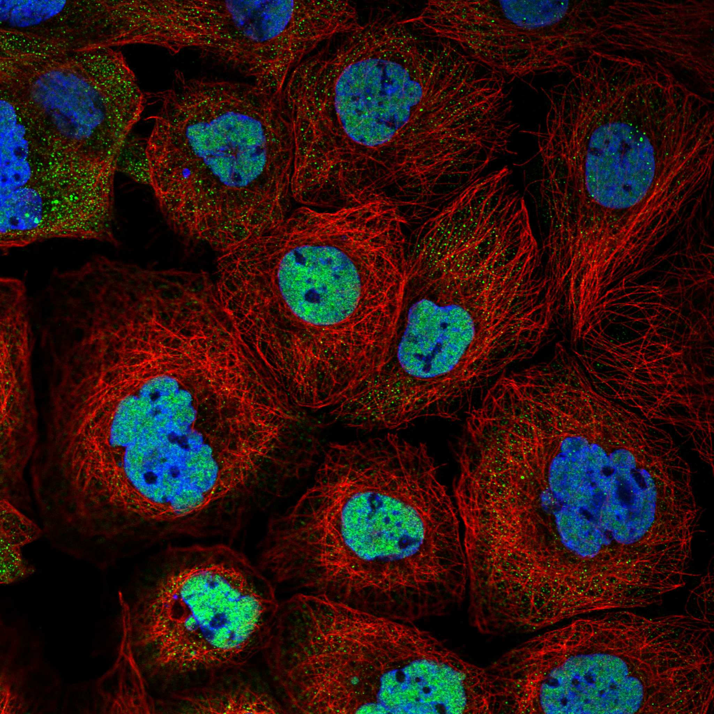
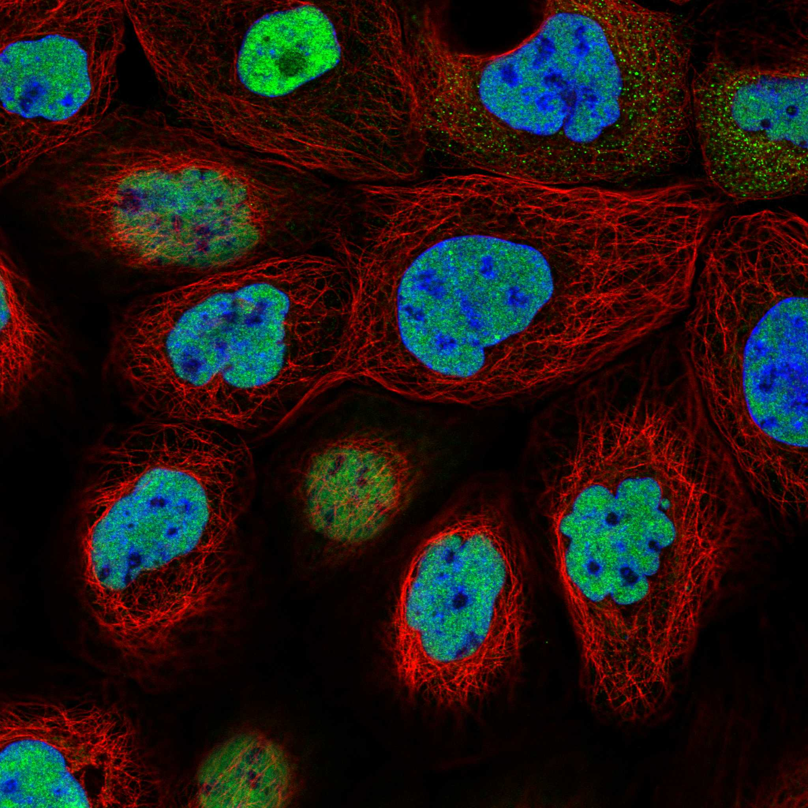

type: protein-evaluation gene: "CCAR1" date: 2026-06-02 tags: [protein-scout, nucleoplasm, evaluation] status: scored pm: 55 ---
CCAR1 核蛋白评估报告
1. 基本信息
| 项目 | 内容 |
|---|---|
| 基因名 / 别名 | CCAR1 / CARP1, DIS |
| 蛋白全称 | Cell division cycle and apoptosis regulator protein 1 |
| 蛋白大小 | 1150 aa / 132.8 kDa |
| UniProt ID | Q8IX12 |
| AlphaFold | AF-Q8IX12-F1 (v6) |
2. 评分总览
| 维度 | 得分 | 满分 | 加权后 | 关键证据摘要 |
|---|---|---|---|---|
| 核定位特异性 | 7/10 | ×4 | 28 | HPA Supported Nucleoplasm + Golgi; GO nucleoplasm TAS + nucleus IBA; UniProt Cytoplasm perinuclear (矛盾) |
| 蛋白大小 | 2/10 | ×1 | 2 | 1150 aa (>1000 aa)，超大蛋白 |
| 研究新颖性 | 6/10 | ×5 | 30 | PubMed strict=55，≤60 档，中等新颖性 |
| 三维结构 | 4/10 | ×3 | 12 | 无 PDB 结构; AF mean pLDDT 69.2, 36.2% <50 |
| 调控结构域 | 8/10 | ×2 | 16 | SAP DNA 结合域 (IPR003034) + 转录共调控域; Mediator/p160 共激活因子 |
| PPI 网络 | 7/10 | ×3 | 21 | STRING 15; IntAct 15; 剪接/转录共调控网络 |
| 互证加分 | -- | -- | +0 | 无显著互证 |
| 加权总分 | 109/180 | |||
| 归一化总分 | 60.6/100 |
3. 详细分析
3.1 核定位证据
| 来源 | 定位 | 可信度 |
|---|---|---|
| UniProt | Cytoplasm, perinuclear region (ECO:0000269) | 实验级 |
| GO-CC | nucleoplasm (GO:0005654, TAS:Reactome); nucleus (GO:0005634, IBA); nuclear envelope lumen (IDA:MGI) | 实验/推论 |
| HPA IF | Supported reliability; Nucleoplasm (main) + Golgi apparatus (additional) | 中等可信度 |
HPA IF 状态: Supported 级别。HPA 显示 Nucleoplasm 主定位 + Golgi。UniProt 标注 perinuclear cytoplasm 与 GO/HPA 核定位有矛盾。
结论: HPA + GO 支持核定位，但 UniProt perinuclear cytoplasm 实验级证据提示部分胞浆分布。核-胞质双定位可能性大。
3.2 蛋白大小评估
评价: 1150 aa (132.8 kDa)，超大蛋白，远超理想实验范围。重组表达和纯化困难。
3.3 研究现状
| 指标 | 数值 |
|---|---|
| PubMed strict (Title/Abstract+gene/protein) | 55 |
| PubMed symbol_only | 79 |
| PubMed broad | 101 |
关键文献: 1. Karasu ME et al. (2024). "CCAR1 promotes DNA repair via alternative splicing." *Mol Cell*. PMID: 38964321 2. Harada N et al. (2024). "The splicing factor CCAR1 regulates the Fanconi anemia/BRCA pathway." *Mol Cell*. PMID: 39025073 3. Hu Z et al. (2023). "Exosome-derived circCCAR1 promotes CD8+ T-cell dysfunction and anti-PD1 resistance." *Mol Cancer*. PMID: 36932387 4. Johnson GS et al. (2020). "CCAR1 and CCAR2 as gene chameleons with antagonistic duality." *Cancer Sci*. PMID: 33403784 5. Tanboon J et al. (2022). "Update on dermatomyositis." *Curr Opin Neurol*. PMID: 35942671
评价: PubMed strict=55，中等研究量。2024 年两篇 Mol Cell 论文揭示了 DNA 修复和 alternative splicing 新功能，研究热度上升。
3.4 三维结构分析
| 指标 | 数值 |
|---|---|
| UniProt 长度 | 1150 aa |
| PDB 条数 | 0 |
| AlphaFold mean pLDDT | 69.2 |
| pLDDT >90 | 37.0% |
| pLDDT 70-90 | 18.9% |
| pLDDT 50-70 | 8.0% |
| pLDDT <50 | 36.2% |
PAE 图:
评价: 无 PDB 结构，仅 AlphaFold 预测。pLDDT 均值 69.2，36.2% 残基 <50。多结构域大蛋白，部分区域有序部分无序。
3.5 结构域分析
| 来源 | 结构域 |
|---|---|
| InterPro | IPR025224, IPR025954, IPR011992 (EF-hand), IPR045353, IPR012340 (NA-binding), IPR025223, IPR003034 (SAP domain), IPR036361 (SAP superfamily) |
| Pfam | PF14443, PF19256, PF14444, PF02037 (SAP) |
染色质调控潜力分析: SAP (SAF-A/B, Acinus, PIAS) 结构域是已知的 DNA 结合结构域，参与染色质组织和 DNA 修复。CCAR1 作为 Mediator/p160 共激活因子，直接参与转录调控。功能包括 AR 转录复合体组装、染色质环化和 RNA Pol II 招募。
3.6 PPI 网络
实验验证互作 (IntAct, physical association):
| Partner | 方法 | PMID | 功能类别 | 调控相关？ |
|---|---|---|---|---|
| MED10 | anti tag coIP | 15175163 | Mediator complex | Yes |
| MED28 | anti tag coIP | 15175163 | Mediator complex | Yes |
| IKBKG | TAP | 14743216 | NF-kB regulator | Yes |
| Mapk14 | two hybrid | 15102471 | MAP kinase p38 | Yes |
| PRKACB | TAP | 20564261 | PKA catalytic | Yes |
| ZYX | anti tag coIP | 28514442 | Focal adhesion | No |
STRING 预测互作 (combined score >0.8):
| Partner | Score | 实验分 | 功能类别 | 调控相关？ |
|---|---|---|---|---|
| PRPF40A | 0.935 | 0 | Splicing factor | Yes |
| TCERG1 | 0.920 | 0 | Transcription elongation | Yes |
| RBM5 | 0.910 | 0.435 | Splicing/RNA binding | Yes |
| RBM25 | 0.882 | 0 | Splicing factor | Yes |
| RBM39 | 0.875 | 0.187 | Splicing coactivator | Yes |
| SRRT | 0.857 | 0 | Splicing factor | Yes |
| DHX9 | 0.851 | 0 | RNA helicase | Yes |
| DDX5 | 0.836 | 0 | RNA helicase | Yes |
评价: STRING 15 + IntAct 15。PPI 网络高度富集剪接因子 (PRPF40A, RBM5, RBM25, RBM39) 和转录相关因子 (TCERG1, Mediator)。与 2024 年发现的 alternative splicing 功能一致。
3.7 多库互证
| 维度 | 来源 | 结果 | 是否一致 |
|---|---|---|---|
| 三维结构 | AlphaFold + PDB | PDB 0 | 仅预测 |
| 结构域 | UniProt/InterPro/Pfam | SAP + EF-hand 多库一致 | 一致 |
| PPI 网络 | STRING + IntAct | 剪接/转录调控网络 | 多源互证 |
| 核定位 | HPA/UniProt/GO | Nucleoplasm vs perinuclear cytoplasm | 部分矛盾 |
互证加分明细: 无显著额外互证加分（定位存在 UniProt/HPA 矛盾）。 总计: +0
4. 总体评价
推荐等级: ***oo (3/5)
核心优势: 1. SAP DNA 结合结构域 + Mediator 共激活因子，直接参与转录调控 2. 2024 年新发现在 DNA 修复和 alternative splicing 中的功能 3. PPI 网络高度富集剪接因子和转录调控因子 4. AR 转录复合体组装与染色质环化功能
风险/不确定性: 1. 蛋白极大 (1150 aa)，实验操作困难 2. 无 PDB 结构，AF pLDDT 偏低 3. UniProt 胞浆定位与 HPA 核定位矛盾 4. PubMed strict=55，中等文献量
下一步建议:
- [ ] 利用 SAP 结构域截短体进行 DNA 结合实验
- [ ] 研究 CCAR1 在 alternative splicing 中是否影响 TE 衍生外显子
- [ ] ChIP-seq 鉴定全基因组（含 TE）结合位点
5. 数据来源
- GeneCards: https://www.genecards.org/cgi-bin/carddisp.pl?gene=CCAR1
- Protein Atlas: https://www.proteinatlas.org/ENSG00000060339-CCAR1
- PubMed: https://pubmed.ncbi.nlm.nih.gov/?term=%22CCAR1%22%5BTitle/Abstract%5D
- UniProt: https://www.uniprot.org/uniprot/Q8IX12
- STRING: https://string-db.org/network/9606.ENSG00000060339
- AlphaFold: https://alphafold.ebi.ac.uk/entry/Q8IX12
 
PPI 网络
| Partner | Source | Score/Evidence |
|---|---|---|
| PRPF40A | STRING | 0.935 |
| TCERG1 | STRING | 0.92 |
| RBM5 | STRING | 0.91 |
| RBM25 | STRING | 0.882 |
| RBM39 | STRING | 0.875 |
| Mapk14 | IntAct | psi-mi:"MI:0018"(two hybrid) |
| MED10 | IntAct | psi-mi:"MI:0007"(anti tag coim |
| Med28 | IntAct | psi-mi:"MI:0007"(anti tag coim |
HPA IF 图像已本地嵌入。
PAE 图像说明: AlphaFold PAE 图像已重新获取并嵌入（见下方 PAE 图像修正块）；结构判断仍结合 pLDDT 与 PAE 综合判断。
<!-- AF_PAE_REPAIR_START --> PAE 图像修正（2026-06-05）: AlphaFold 提供 predicted aligned error 图像；此前“PAE 图像暂无数据”的表述为未获取/未嵌入导致。